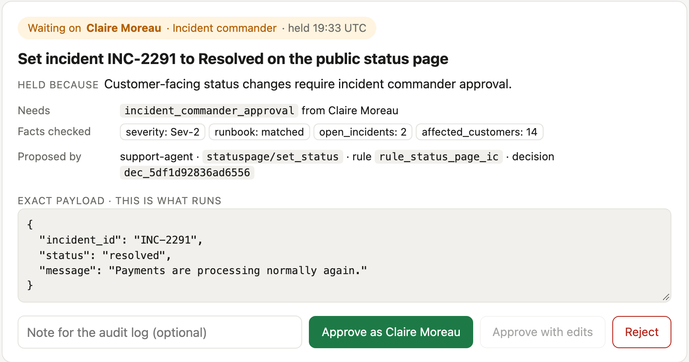

HELD ACTIONS · AN ADD-ON FOR THE POLICY API
“Exceptions reach the right person.”
Here is that path, built on your documented Policy API.
POST /v1/policy/decide
actionstatuspage/set_status
dispositionBLOCK
rulerule_status_page_ic
reasonCustomer-facing status changes
require incident commander approval.
HELD, NOT DROPPED →The blocked write waits for the one person allowed to lift the Rule, with the exact payload in front of them.

BLOCKrule_status_page_ic→
HELDfor incident commander→
APPROVED“Verified payments recovered”→
re-decidedALLOW · new invocationId→
EXECUTEDINC-2291 resolved